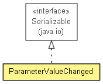

context.arch.logging.hibernate
Class ParameterValueChanged
java.lang.Object
 context.arch.logging.hibernate.ParameterValueChanged
context.arch.logging.hibernate.ParameterValueChanged
- All Implemented Interfaces:
- java.io.Serializable
@Entity
public class ParameterValueChanged
- extends java.lang.Object
- implements java.io.Serializable

- See Also:
- Serialized Form
| Methods inherited from class java.lang.Object |
clone, finalize, getClass, notify, notifyAll, wait, wait, wait |
ParameterValueChanged
public ParameterValueChanged(java.lang.String parametervaluestring,
java.lang.Float parametervaluenumeric,
java.util.Date parametervaluechangedtime,
ERParameter ERParameter,
EnactorRegistration EnactorRegistration,
java.util.Set<PVCParamAttribute> PVCParamAttributes)
- full constructor
ParameterValueChanged
public ParameterValueChanged()
- default constructor
ParameterValueChanged
public ParameterValueChanged(java.util.Date parametervaluechangedtime,
ERParameter ERParameter,
EnactorRegistration EnactorRegistration,
java.util.Set<PVCParamAttribute> PVCParamAttributes)
- minimal constructor
getParametervaluechangedid
public java.lang.Integer getParametervaluechangedid()
setParametervaluechangedid
public void setParametervaluechangedid(java.lang.Integer parametervaluechangedid)
getParametervaluestring
public java.lang.String getParametervaluestring()
setParametervaluestring
public void setParametervaluestring(java.lang.String parametervaluestring)
getParametervaluenumeric
public java.lang.Float getParametervaluenumeric()
setParametervaluenumeric
public void setParametervaluenumeric(java.lang.Float parametervaluenumeric)
getParametervaluechangedtime
public java.util.Date getParametervaluechangedtime()
setParametervaluechangedtime
public void setParametervaluechangedtime(java.util.Date parametervaluechangedtime)
getERParameter
public ERParameter getERParameter()
setERParameter
public void setERParameter(ERParameter ERParameter)
getEnactorRegistration
public EnactorRegistration getEnactorRegistration()
setEnactorRegistration
public void setEnactorRegistration(EnactorRegistration EnactorRegistration)
getPVCParamAttributes
public java.util.Set<PVCParamAttribute> getPVCParamAttributes()
setPVCParamAttributes
public void setPVCParamAttributes(java.util.Set<PVCParamAttribute> PVCParamAttributes)
toString
public java.lang.String toString()
- Overrides:
toString in class java.lang.Object
equals
public boolean equals(java.lang.Object other)
- Overrides:
equals in class java.lang.Object
hashCode
public int hashCode()
- Overrides:
hashCode in class java.lang.Object